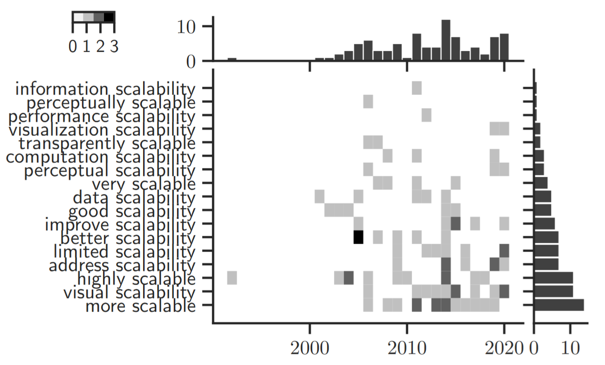

Scalability in Visualization

Venue. TVCG (2022)
Abstract. We introduce a conceptual model for scalability designed for visualization research. With this model, we systematically analyze over 120 visualization publications from 1990-2020 to characterize the different notions of scalability in these works. While many papers have addressed scalability issues, our survey identifies a lack of consistency in the use of the term in the visualization research community. We address this issue by introducing a consistent terminology meant to help visualization researchers better characterize the scalability aspects in their research. It also helps in providing multiple methods for supporting the claim that a work is 'scalable'. Our model is centered around an effort function with inputs and outputs. The inputs are the problem size and resources, whereas the outputs are the actual efforts, for instance, in terms of computational run time or visual clutter. We select representative examples to illustrate different approaches and facets of what scalability can mean in visualization literature. Finally, targeting the diverse crowd of visualization researchers without a scalability tradition, we provide a set of recommendations for how scalability can be presented in a clear and consistent way to improve fair comparison between visualization techniques and systems and foster reproducibility.
Link to this page: